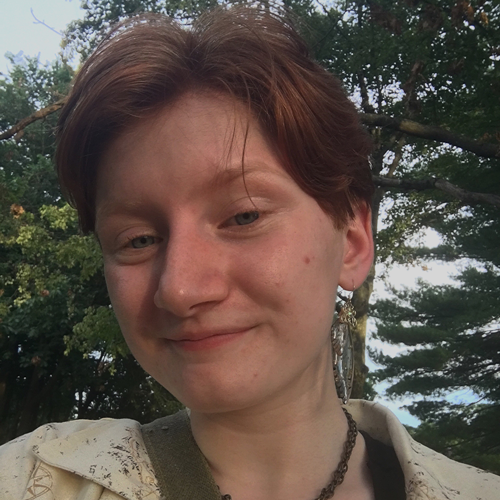
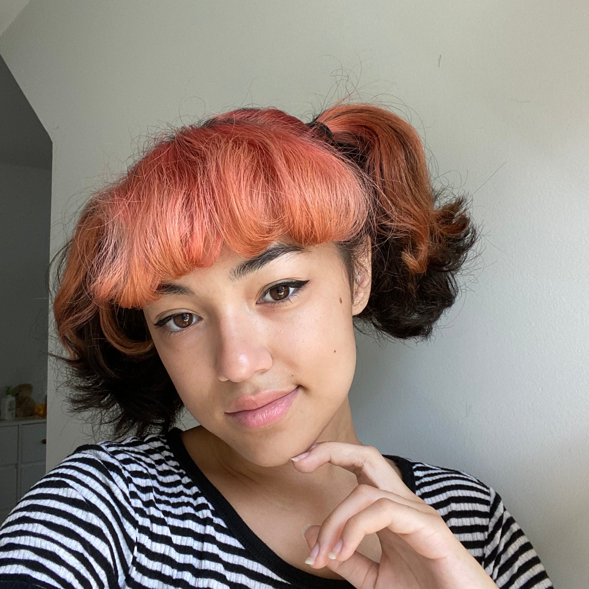

Alana, The Iconoclast
She/Her/Hers
Alana is a 46 year old man named Brad.
She discovered Firnando soon after she commenced her spiritual journey to find her religious identity.
She found that the Firnandowist philosophy was compatible with her own. Thus, upon joining the Church she
immediately attempted to supersede the High Priest's role of supreme leader. Oh, and she is currently
accepting applications for a sugar daddy to support her burgeoning gambling addiction. Email her at
thisisathreat@gmail.com
Liam, Commander in Theory
He/Him/His
Liam is 17 years old. He enjoys everything to do with computers, and is fluent in at least four different programing languages.
Along with designing websites for duck churches he also edits their holy books (he is currently not seeking further employment though).
He spends much of his time with computers, however he also does fencing because those two are obviously closely intertwined activities.

Teaghan, Holder of the Undisclosed
She/Her/Hers
Teaghan is a 15 year old who likes theater, jackets, and of course, rubber ducks.
She has been a part of this Church since the founding and loves the community it has become.
Teaghan is known for her strange hobbies like collecting bones, stealing salt packets,
and trying to take over the world. You can find her @TeagoRex on instagram.
She loves spreading Firnando's word everywhere she can and, as always, Hail Firnando!

Leah, Infant of Supreme Vibes
She/Her/Hers
Leah Ricafort is 16 years old. To her, Firnandowism is about creating a welcoming community and support system for each other,
and coming together through the holy power of Firnando! Her interests include painting, doodling, singing, playing video games,
and being extremely cool. You can find her @leahr05 on Instagram.